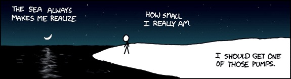

Credits to xkcd.com
I don't think I like California. I'd rather be in the deciduous trees of the East coast, with seasons that change and people that aren't always thinking about tech. I found that I strongly dislike the city (I've been living in San Francisco) and am worried that I'll never truly find peace unless I become a recluse in the mountains, spending my time hunting, gardening, training, and reading. For now my own mind traps me in this lifestyle, a river that froths white in its rapidness but never seems to move, anxiously meanders from cliff to cliff but never manages to carve a channel more than six inches below the surface.